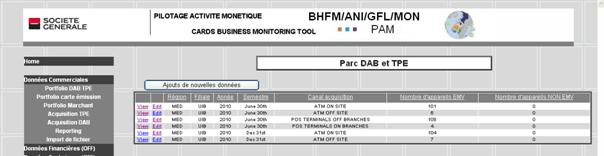
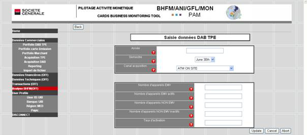
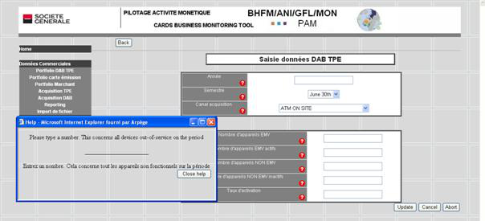

Tables des matières Fermer la fenêtre
Afficher la table dans laquelle vous devez saisir de nouvelles données.
Exemple de la table Parc DAB et TPE
Cliquer sur le bouton : Ajouts de nouvelles données

o Affichage du formulaire de saisie des données.

o Deux champs permettent de spécifier, pour chaque enregistrement, la période :
ANNEE : Tapez l’année du semestre concerné, par exemple pour le 1 ° semestre 2011, taper 2011.
SEMESTRE : dans la liste déroulante choisissez June 30th pour le 1° semestre et Dec 31st pour le deuxième semestre.
o Choix dans une liste du type de canal de distribution :
§ CANAL DE DISTRIBUTION : choisissez le canal dans la liste.
Saisir ensuite les valeurs correspondantes de la période.
L’aide en ligne : vous pouvez à tout moment cliquer sur l’icône pour faire apparaître une fenêtre d’aide donnant des informations sur le type de valeur à saisir.

o Une fois le formulaire rempli, trois boutons sont disponibles :
§ Update : confirme la mise à jour de l’enregistrement, met à jour la table et retourne à l’affichage du tableau. Vérifier que l’enregistrement a bien été créé.
§ Cancel : annule votre modification et affiche les champs vides.
§ Abort : annule la saisie et revient à l’affichage du tableau de synthèse.
La suppression des enregistrements est à ce jour réservée aux administrateurs. Si une filiale veut supprimer un ou plusieurs enregistrements, elle doit en faire la demande à l’administrateur de l’application à BHFM.